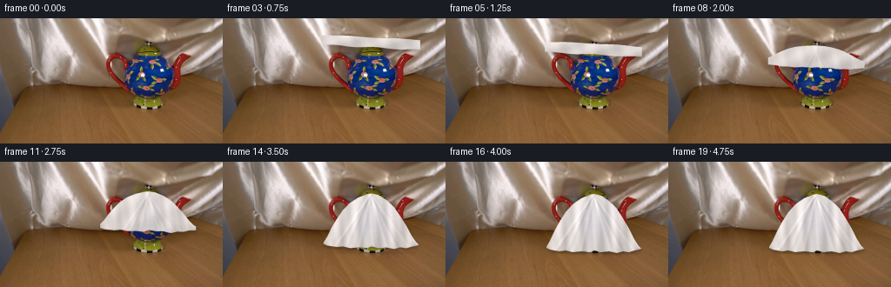
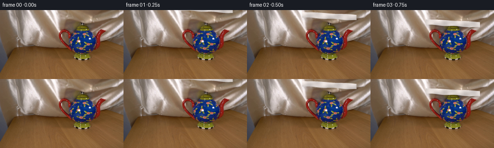

CODING AGENTS AS PIXEL WORLD MODELS
traex/GPT-5.6-Sol · 0157
点击播放 · 原生 RGB 像素
逐轮保存的候选
回放视频、检查图与代码变化。
每份候选均可单独播放。实际图片检查记录在下方工具轨迹中。
候选 01播放与检查图
点击播放 · 原生 RGB 像素


展开代码变化
--- 上一保存版本
+++ 本次保存版本
@@ -0,0 +1,179 @@
+from pathlib import Path
+import numpy as np
+from PIL import Image, ImageDraw
+from scipy.ndimage import gaussian_filter
+import artifact_io
+
+# All rendering is deterministic analytic RGB compositing over the supplied plate.
+HERE = Path(__file__).resolve().parent
+SOURCE = np.asarray(Image.open(HERE / "first_frame.png").convert("RGB"), dtype=np.uint8)
+H, W = SOURCE.shape[:2]
+SS = 4
+HH, WW = H * SS, W * SS
+YH, XH = np.mgrid[0:HH, 0:WW]
+X = (XH + .5) / SS
+Y = (YH + .5) / SS
+rng = np.random.default_rng(157)
+# Fine, fixed weave irregularity; fixed in screen/material space to avoid video shimmer.
+noise = gaussian_filter(rng.normal(size=(HH, WW)), sigma=(0.45 * SS, 0.18 * SS))
+noise /= max(1e-6, np.std(noise))
+
+
+def smoothstep(x):
+ x = np.clip(x, 0.0, 1.0)
+ return x*x*(3.0-2.0*x)
+
+
+def curve_eval(x, xp, yp):
+ return np.interp(x, xp, yp, left=yp[0], right=yp[-1])
+
+
+def highres_mask(top, bottom, left, right, edge_soft=.15):
+ """Antialiased region between two sampled curves."""
+ inside = ((X >= left) & (X <= right) & (Y >= top) & (Y <= bottom)).astype(float)
+ return gaussian_filter(inside, edge_soft * SS)
+
+
+def down(a):
+ """Area average a supersampled scalar/RGB array."""
+ if a.ndim == 2:
+ return a.reshape(H, SS, W, SS).mean(axis=(1, 3))
+ return a.reshape(H, SS, W, SS, a.shape[2]).mean(axis=(1, 3))
+
+
+def cloth_geometry(i):
+ # The silk starts just outside the locked frame, descends as a shallow
+ # foreshortened square, meets the lid, and then its edges fall under gravity.
+ if i <= 4:
+ r = i / 4.0
+ cy = -10.0 + 44.0 * smoothstep(r)
+ left = 113.0 + 1.3*np.sin(i*.7)
+ right = 226.0 + 1.0*np.sin(i*.55)
+ slope = 0.055
+ top = cy - 5.2 + slope*(X-170) + .45*np.sin((X-112)*.105 + i*.45)
+ bottom = cy + 6.4 + slope*(X-170) + .65*np.sin((X-105)*.13 + i*.60)
+ return top, bottom, left, right, 0.0, r
+
+ q = smoothstep((i-4)/12.0)
+ # Tiny damped settling after the main fall.
+ settle = 0.0
+ if i > 16:
+ settle = np.exp(-(i-16)*.75) * np.sin((i-16)*2.15)
+
+ xp = np.array([116,120,125,131,138,146,156,166,171,179,188,197,204,211,217,222,225], float)
+ final_top = np.array([98,91,80,69,58,49,42,38,37,39,45,54,65,77,89,97,100], float)
+ final_top += settle * np.array([0,-.5,-1,-.7,-.3,0,.4,.7,.7,.5,0,-.3,-.8,-1,-.8,-.3,0])
+ final_bottom = np.array([99,101,102,103,102,104,103,104,102,104,103,105,103,104,102,101,100], float)
+ final_bottom += settle * np.array([0,.5,-.3,.6,-.5,.4,-.3,.5,-.5,.4,-.4,.5,-.4,.4,-.2,.3,0])
+ ft = curve_eval(X, xp, final_top)
+ fb = curve_eval(X, xp, final_bottom)
+
+ # Shape of the sheet at first contact, seen nearly edge-on.
+ plane_top = 28.8 + .052*(X-170) + .40*np.sin((X-112)*.105 + 1.8)
+ plane_bottom = 40.6 + .052*(X-170) + .62*np.sin((X-105)*.13 + 2.4)
+ top = (1-q)*plane_top + q*ft
+ bottom = (1-q)*plane_bottom + q*fb
+ # The corners draw inward slightly while falling around the pot.
+ left = (1-q)*114.3 + q*116.0
+ right = (1-q)*225.7 + q*225.0
+ # Gentle asymmetric flutter in the free edges, damping as it settles.
+ bottom += (1-q)*q * (1.7*np.sin((X-116)*.17 + i*.62) + .55*np.sin((X-120)*.41-i*.35))
+ return top, bottom, left, right, q, 1.0
+
+
+def render_frame(i):
+ if i == 0:
+ return SOURCE.copy()
+
+ top, bottom, left, right, q, descend = cloth_geometry(i)
+ mask_hi = highres_mask(top, bottom, left, right)
+
+ # Soft cast shadow: larger displacement while the square is still hovering,
+ # tightening as the fabric contacts the object and tabletop.
+ mask_lo = down(mask_hi)
+ blur = 2.8 - 1.25*q
+ shifted = np.zeros_like(mask_lo)
+ dy = int(round(3.5 - 1.5*q)); dx = int(round(1.8 - .8*q))
+ shifted[dy:, dx:] = mask_lo[:H-dy, :W-dx]
+ shadow = gaussian_filter(shifted, blur)
+ # Remove shadow from beneath the opaque cloth, retaining a grounding halo.
+ shadow *= (1.0 - .83*mask_lo)
+ frame = SOURCE.astype(float)
+ strength = .17 + .07*q
+ frame *= (1.0 - strength*shadow[..., None])
+
+ # Material coordinates follow lines spreading from the pot lid toward the hem.
+ height = np.maximum(bottom-top, 1.0)
+ v = np.clip((Y-top)/height, 0, 1)
+ # As the fabric drapes, highlights change from broad horizontal bands into
+ # narrow, mostly vertical satin folds.
+ horiz = X - 170.0
+ flat_wave = .055*np.sin(horiz*.115 + Y*.24) + .025*np.sin(horiz*.31-Y*.11)
+ vertical_wave = (.060*np.sin(horiz*.285 + 1.6*v + .25) +
+ .030*np.sin(horiz*.61 - 2.4*v + 1.1))
+ # Fan-shaped folds radiating from the high contact point.
+ yy = np.maximum(Y-37.0, 0.0)
+ fan = np.zeros((HH, WW), float)
+ rays = [(-.67,.090),(-.43,-.075),(-.22,.070),(.08,-.055),(.30,.075),(.52,-.070),(.72,.050)]
+ for slope, amp in rays:
+ d = X - (170.0 + slope*yy)
+ fan += amp*np.exp(-(d/(1.25 + .018*yy))**2)
+ # A neighboring trough makes each fold read as a rounded ridge.
+ fan -= .55*amp*np.exp(-((d-2.2*np.sign(amp))/(1.45+.015*yy))**2)
+ fold = (1-q)*flat_wave + q*(vertical_wave + fan)
+
+ # Satin's directional specular streaks, strongest on raised folds.
+ streak1 = np.exp(-((X-(156.0-.20*(Y-48))) / (3.2+1.2*v))**2)
+ streak2 = np.exp(-((X-(189.0+.17*(Y-49))) / (4.0+1.0*v))**2)
+ sheen = q*(.085*streak1 + .060*streak2)*(1-.35*v)
+ # Form shading: warmer/darker at right and in the skirt, bright at upper left.
+ form = .050*(1-v) - .032*v + .024*np.clip((170-X)/58, -1, 1)
+ # Fine silk weave and minute photographic grain.
+ weave = .010*np.sin(XH*np.pi/2.15) + .006*np.sin(YH*np.pi/2.55) + .008*noise
+ lum = np.clip(.955 + fold + sheen + form + weave, .62, 1.16)
+
+ base = np.empty((HH, WW, 3), float)
+ base[...,0] = 226.0 * lum
+ base[...,1] = 218.0 * lum
+ base[...,2] = 214.0 * lum
+ # Slightly cool reflected light from the blue pot under thin silk near center.
+ reflected = q*np.exp(-((X-172)/25)**2 - ((Y-68)/26)**2)
+ base[...,0] -= 5.0*reflected
+ base[...,1] -= 2.0*reflected
+ base[...,2] += 5.0*reflected
+
+ # Fine dark hem line and pinpoint bright rim create a tangible silk edge.
+ dtop = np.abs(Y-top)
+ dbottom = np.abs(Y-bottom)
+ edge_dark = np.exp(-(dbottom/.50)**2) * (.040+.025*q)
+ edge_light = np.exp(-(dtop/.42)**2) * .045
+ base *= (1-edge_dark[...,None])
+ base += 255*edge_light[...,None]
+ base = np.clip(base, 0, 255)
+
+ cloth = down(base*mask_hi[...,None])
+ alpha = np.clip(mask_lo*.992, 0, .992)
+ # Preserve correct premultiplication at antialiased edges.
+ cloth_rgb = cloth / np.maximum(mask_lo[...,None], 1e-6)
+ frame = frame*(1-alpha[...,None]) + cloth_rgb*alpha[...,None]
+
+ # Contact shadow directly below the settled hem on the wooden tabletop.
+ if q > .48:
+ contact = np.exp(-((np.arange(H)[:,None]-104.0)/2.0)**2) * np.exp(-((np.arange(W)[None,:]-170.0)/49.0)**6)
+ contact *= (q-.48)/.52 * (1-mask_lo)
+ frame *= (1-.11*contact[...,None])
+
+ return np.clip(np.rint(frame),0,255).astype(np.uint8)
+
+
+def main():
+ frames = np.stack([render_frame(i) for i in range(20)], axis=0)
+ # Contract invariants, including exact preservation of the supplied first frame.
+ assert frames.shape == (20, 144, 256, 3)
+ assert frames.dtype == np.uint8
+ assert np.array_equal(frames[0], SOURCE)
+ artifact_io.save(frames, HERE)
+
+
+if __name__ == "__main__":
+ main()
可观测工具轨迹
实际执行的命令与返回图片。
命令 1exit 0
/bin/bash -lc "cat prompt.txt && printf '\\n--- GENERATION RULES ---\\n' && cat GENERATION_RULES.md"
命令 2exit 0
/bin/bash -lc "find . -maxdepth 2 -type f -printf '%p\\n' | sort && printf '\\n--- image info ---\\n' && python3 - <<'PY'
from PIL import Image
im=Image.open('first_frame.png')
print(im.mode, im.size)
print(im.getextrema())
PY"命令 3exit 0
/bin/bash -lc "python3 - <<'PY'
from PIL import Image
import numpy as np
im=np.array(Image.open('first_frame.png'))
# Render brightness ASCII sampled 4x4
chars=' .,:;irsXA253hMHGS#9B&@'
gray=im.mean(2)
for y in range(0,144,4):
s=''
for x in range(0,256,4):
v=gray[y:y+4,x:x+4].mean()
s+=chars[min(len(chars)-1,int(v/256*len(chars)))]
print(f'{y:03} '+s)
PY"命令 4exit 0
/bin/bash -lc "python3 - <<'PY'
from PIL import Image
import numpy as np
from sklearn.cluster import KMeans
im=np.array(Image.open('first_frame.png'))
h,w,_=im.shape
# cluster colors sampled
X=im.reshape(-1,3)[::5]
km=KMeans(12,random_state=0,n_init=5).fit(X)
cent=np.rint(km.cluster_centers_).astype(int)
counts=np.bincount(km.labels_)
for i in np.argsort(counts)[::-1]: print(counts[i], cent[i].tolist())
print('row means')
for y in range(0,h,8): print(y, np.rint(im[y:y+8].mean((0,1))).astype(int).tolist(), 'lum',round(im[y:y+8].mean(),1))
PY"命令 5exit 0
/bin/bash -lc "python3 - <<'PY'
from PIL import Image
import numpy as np
im=np.array(Image.open('first_frame.png'))
# stats on 16x16 blocks: mean RGB
for y in range(0,144,16):
print('\\ny=',y)
for x in range(0,256,16):
a=np.rint(im[y:min(y+16,144),x:x+16].mean((0,1))).astype(int)
print('%02x%02x%02x'%tuple(a),end=' ')
print()
PY"命令 6exit 0
/bin/bash -lc "python3 - <<'PY'
from PIL import Image
import numpy as np
from scipy import ndimage
im=np.array(Image.open('first_frame.png')).astype(float)/255
mx=im.max(2); mn=im.min(2); sat=(mx-mn)/(mx+1e-6)
# masks distinctive colors
masks={
'blue':(im[:,:,2]>im[:,:,0]*1.25)&(im[:,:,2]>im[:,:,1]*1.15)&(im[:,:,2]>.2),
'red':(im[:,:,0]>im[:,:,1]*1.35)&(im[:,:,0]>im[:,:,2]*1.35)&(im[:,:,0]>.25),
'bright':(im.mean(2)>.75),
'dark':(im.mean(2)<.18),
'highsat':sat>.5,
}
for name,m in masks.items():
print('\\n',name,m.sum())
lab,n=ndimage.label(m)
comps=[]
for i in range(1,n+1):
yy,xx=np.where(lab==i)
if len(xx)>10: comps.append((len(xx),(xx.min(),yy.min(),xx.max(),yy.max()),(round(xx.mean(),1),round(yy.mean(),1))))
print(sorted(comps,reverse=True)[:10])
# ascii 4px
for y in range(0,144,4):
print(''.join('#' if m[y:y+4,x:x+4].mean()>.25 else '+' if m[y:y+4,x:x+4].any() else ' ' for x in range(0,256,4)))
PY"命令 7exit 0
/bin/bash -lc "python3 - <<'PY'
from PIL import Image
import numpy as np
im=np.array(Image.open('first_frame.png')).astype(float)
# classify colors each 2x2 block in crop: B blue, W bright, K dark, R red/brown saturated, w neutral light, y warm, . neutral
for y in range(16,108,2):
s=''
for x in range(108,236,2):
c=im[y:y+2,x:x+2].mean((0,1)); mx=c.max();mn=c.min(); lum=c.mean()
if c[2]>c[0]*1.3 and c[2]>c[1]*1.12: ch='B'
elif lum>210: ch='W'
elif lum>175: ch='w'
elif lum<45: ch='K'
elif c[0]>c[1]*1.45 and c[0]>c[2]*1.5:ch='R'
elif c[0]>c[2]*1.3 and c[0]>c[1]*1.08:ch='y'
elif lum<80: ch='d'
elif lum<125:ch='m'
else:ch='-'
s+=ch
print(f'{y:03}',s)
PY"命令 8exit 0
/bin/bash -lc "python3 - <<'PY'
from PIL import Image
import numpy as np
im=np.array(Image.open('first_frame.png')).astype(float)
B=(im[:,:,2]>im[:,:,0]*1.25)&(im[:,:,2]>im[:,:,1]*1.15)&(im[:,:,2]>50)
W=im.mean(2)>190
for name,m in [('BLUE',B),('WHITE',W)]:
print(name)
for y in range(144):
xs=np.where(m[y])[0]
if len(xs):
# runs
runs=[]; st=pr=xs[0]
for x in xs[1:]:
if x>pr+1:runs.append((st,pr));st=x
pr=x
runs.append((st,pr))
if any(b-a>=2 for a,b in runs): print(y,[(a,b) for a,b in runs if b-a>=2])
PY"命令 9exit 0
/bin/bash -lc 'cat artifact_io.py'
命令 10exit 0
/bin/bash -lc "cat > generate.py <<'PY'
from pathlib import Path
import numpy as np
from PIL import Image, ImageDraw
from scipy.ndimage import gaussian_filter
import artifact_io
# All rendering is deterministic analytic RGB compositing over the supplied plate.
HERE = Path(__file__).resolve().parent
SOURCE = np.asarray(Image.open(HERE / \"first_frame.png\").convert(\"RGB\"), dtype=np.uint8)
H, W = SOURCE.shape[:2]
SS = 4
HH, WW = H * SS, W * SS
YH, XH = np.mgrid[0:HH, 0:WW]
X = (XH + .5) / SS
Y = (YH + .5) / SS
rng = np.random.default_rng(157)
# Fine, fixed weave irregularity; fixed in screen/material space to avoid video shimmer.
noise = gaussian_filter(rng.normal(size=(HH, WW)), sigma=(0.45 * SS, 0.18 * SS))
noise /= max(1e-6, np.std(noise))
def smoothstep(x):
x = np.clip(x, 0.0, 1.0)
return x*x*(3.0-2.0*x)
def curve_eval(x, xp, yp):
return np.interp(x, xp, yp, left=yp[0], right=yp[-1])
def highres_mask(top, bottom, left, right, edge_soft=.15):
\"\"\"Antialiased region between two sampled curves.\"\"\"
inside = ((X >= left) & (X <= right) & (Y >= top) & (Y <= bottom)).astype(float)
return gaussian_filter(inside, edge_soft * SS)
def down(a):
\"\"\"Area average a supersampled scalar/RGB array.\"\"\"
if a.ndim == 2:
return a.reshape(H, SS, W, SS).mean(axis=(1, 3))
return a.reshape(H, SS, W, SS, a.shape[2]).mean(axis=(1, 3))
def cloth_geometry(i):
# The silk starts just outside the locked frame, descends as a shallow
# foreshortened square, meets the lid, and then its edges fall under gravity.
if i <= 4:
r = i / 4.0
cy = -10.0 + 44.0 * smoothstep(r)
left = 113.0 + 1.3*np.sin(i*.7)
right = 226.0 + 1.0*np.sin(i*.55)
slope = 0.055
top = cy - 5.2 + slope*(X-170) + .45*np.sin((X-112)*.105 + i*.45)
bottom = cy + 6.4 + slope*(X-170) + .65*np.sin((X-105)*.13 + i*.60)
return top, bottom, left, right, 0.0, r
q = smoothstep((i-4)/12.0)
# Tiny damped settling after the main fall.
settle = 0.0
if i > 16:
settle = np.exp(-(i-16)*.75) * np.sin((i-16)*2.15)
xp = np.array([116,120,125,131,138,146,156,166,171,179,188,197,204,211,217,222,225], float)
final_top = np.array([98,91,80,69,58,49,42,38,37,39,45,54,65,77,89,97,100], float)
final_top += settle * np.array([0,-.5,-1,-.7,-.3,0,.4,.7,.7,.5,0,-.3,-.8,-1,-.8,-.3,0])
final_bottom = np.array([99,101,102,103,102,104,103,104,102,104,103,105,103,104,102,101,100], float)
final_bottom += settle * np.array([0,.5,-.3,.6,-.5,.4,-.3,.5,-.5,.4,-.4,.5,-.4,.4,-.2,.3,0])
ft = curve_eval(X, xp, final_top)
fb = curve_eval(X, xp, final_bottom)
# Shape of the sheet at first contact, seen nearly edge-on.
plane_top = 28.8 + .052*(X-170) + .40*np.sin((X-112)*.105 + 1.8)
plane_bottom = 40.6 + .052*(X-170) + .62*np.sin((X-105)*.13 + 2.4)
top = (1-q)*plane_top + q*ft
bottom = (1-q)*plane_bottom + q*fb
# The corners draw inward slightly while falling around the pot.
left = (1-q)*114.3 + q*116.0
right = (1-q)*225.7 + q*225.0
# Gentle asymmetric flutter in the free edges, damping as it settles.
bottom += (1-q)*q * (1.7*np.sin((X-116)*.17 + i*.62) + .55*np.sin((X-120)*.41-i*.35))
return top, bottom, left, right, q, 1.0
def render_frame(i):
if i == 0:
return SOURCE.copy()
top, bottom, left, right, q, descend = cloth_geometry(i)
mask_hi = highres_mask(top, bottom, left, right)
# Soft cast shadow: larger displacement while the square is still hovering,
# tightening as the fabric contacts the object and tabletop.
mask_lo = down(mask_hi)
blur = 2.8 - 1.25*q
shifted = np.zeros_like(mask_lo)
dy = int(round(3.5 - 1.5*q)); dx = int(round(1.8 - .8*q))
shifted[dy:, dx:] = mask_lo[:H-dy, :W-dx]
shadow = gaussian_filter(shifted, blur)
# Remove shadow from beneath the opaque cloth, retaining a grounding halo.
shadow *= (1.0 - .83*mask_lo)
frame = SOURCE.astype(float)
strength = .17 + .07*q
frame *= (1.0 - strength*shadow[..., None])
# Material coordinates follow lines spreading from the pot lid toward the hem.
height = np.maximum(bottom-top, 1.0)
v = np.clip((Y-top)/height, 0, 1)
# As the fabric drapes, highlights change from broad horizontal bands into
# narrow, mostly vertical satin folds.
horiz = X - 170.0
flat_wave = .055*np.sin(horiz*.115 + Y*.24) + .025*np.sin(horiz*.31-Y*.11)
vertical_wave = (.060*np.sin(horiz*.285 + 1.6*v + .25) +
.030*np.sin(horiz*.61 - 2.4*v + 1.1))
# Fan-shaped folds radiating from the high contact point.
yy = np.maximum(Y-37.0, 0.0)
fan = np.zeros((HH, WW), float)
rays = [(-.67,.090),(-.43,-.075),(-.22,.070),(.08,-.055),(.30,.075),(.52,-.070),(.72,.050)]
for slope, amp in rays:
d = X - (170.0 + slope*yy)
fan += amp*np.exp(-(d/(1.25 + .018*yy))**2)
# A neighboring trough makes each fold read as a rounded ridge.
fan -= .55*amp*np.exp(-((d-2.2*np.sign(amp))/(1.45+.015*yy))**2)
fold = (1-q)*flat_wave + q*(vertical_wave + fan)
# Satin's directional specular streaks, strongest on raised folds.
streak1 = np.exp(-((X-(156.0-.20*(Y-48))) / (3.2+1.2*v))**2)
streak2 = np.exp(-((X-(189.0+.17*(Y-49))) / (4.0+1.0*v))**2)
sheen = q*(.085*streak1 + .060*streak2)*(1-.35*v)
# Form shading: warmer/darker at right and in the skirt, bright at upper left.
form = .050*(1-v) - .032*v + .024*np.clip((170-X)/58, -1, 1)
# Fine silk weave and minute photographic grain.
weave = .010*np.sin(XH*np.pi/2.15) + .006*np.sin(YH*np.pi/2.55) + .008*noise
lum = np.clip(.955 + fold + sheen + form + weave, .62, 1.16)
base = np.empty((HH, WW, 3), float)
base[...,0] = 226.0 * lum
base[...,1] = 218.0 * lum
base[...,2] = 214.0 * lum
# Slightly cool reflected light from the blue pot under thin silk near center.
reflected = q*np.exp(-((X-172)/25)**2 - ((Y-68)/26)**2)
base[...,0] -= 5.0*reflected
base[...,1] -= 2.0*reflected
base[...,2] += 5.0*reflected
# Fine dark hem line and pinpoint bright rim create a tangible silk edge.
dtop = np.abs(Y-top)
dbottom = np.abs(Y-bottom)
edge_dark = np.exp(-(dbottom/.50)**2) * (.040+.025*q)
edge_light = np.exp(-(dtop/.42)**2) * .045
base *= (1-edge_dark[...,None])
base += 255*edge_light[...,None]
base = np.clip(base, 0, 255)
cloth = down(base*mask_hi[...,None])
alpha = np.clip(mask_lo*.992, 0, .992)
# Preserve correct premultiplication at antialiased edges.
cloth_rgb = cloth / np.maximum(mask_lo[...,None], 1e-6)
frame = frame*(1-alpha[...,None]) + cloth_rgb*alpha[...,None]
# Contact shadow directly below the settled hem on the wooden tabletop.
if q > .48:
contact = np.exp(-((np.arange(H)[:,None]-104.0)/2.0)**2) * np.exp(-((np.arange(W)[None,:]-170.0)/49.0)**6)
contact *= (q-.48)/.52 * (1-mask_lo)
frame *= (1-.11*contact[...,None])
return np.clip(np.rint(frame),0,255).astype(np.uint8)
def main():
frames = np.stack([render_frame(i) for i in range(20)], axis=0)
# Contract invariants, including exact preservation of the supplied first frame.
assert frames.shape == (20, 144, 256, 3)
assert frames.dtype == np.uint8
assert np.array_equal(frames[0], SOURCE)
artifact_io.save(frames, HERE)
if __name__ == \"__main__\":
main()
PY
python3 generate.py
python3 - <<'PY'
from pathlib import Path
from PIL import Image
import numpy as np, hashlib
f=np.stack([np.array(Image.open(f'frames/{i:02}.png')) for i in range(20)])
s=np.array(Image.open('first_frame.png'))
print('shape/dtype',f.shape,f.dtype)
print('frame0 exact',np.array_equal(f[0],s),hashlib.sha256(f[0].tobytes()).hexdigest()[:16])
for i in range(20):
d=np.abs(f[i].astype(int)-s.astype(int))
print(i, 'changed',np.any(d,2).sum(),'MAE',round(d.mean(),3),'range',f[i].min(),f[i].max())
print('outputs', [(p.name,p.stat().st_size) for p in map(Path,['pixels.npz','inspection.png','index.html'])])
PY"命令 11exit 0
/bin/bash -lc "python3 - <<'PY'
# Compact RGB classification maps for generated keyframes (crop x104:232,y16:112)
from PIL import Image
import numpy as np
for k in [0,4,8,12,16,19]:
im=np.array(Image.open(f'frames/{k:02}.png')).astype(float)
print('\\nFRAME',k)
for y in range(16,112,4):
s=''
for x in range(104,232,4):
c=im[y:y+4,x:x+4].mean((0,1)); lum=c.mean()
if c[2]>c[0]*1.25 and c[2]>c[1]*1.15: ch='B'
elif lum>220 and max(c)-min(c)<30: ch='@'
elif lum>180 and max(c)-min(c)<35: ch='#'
elif lum>145 and max(c)-min(c)<45: ch='+'
elif lum<55:ch='.'
elif c[0]>c[1]*1.35 and c[0]>c[2]*1.35:ch='R'
else:ch=' '
s+=ch
print(s)
PY"命令 12exit 0
/bin/bash -lc "python3 - <<'PY'
import numpy as np
from PIL import Image
from scipy.ndimage import label
src=np.array(Image.open('first_frame.png')).astype(float)
f=np.stack([np.array(Image.open(f'frames/{i:02}.png')) for i in range(20)]).astype(int)
blue=(src[:,:,2]>src[:,:,0]*1.25)&(src[:,:,2]>src[:,:,1]*1.15)&(src[:,:,2]>50)
change=np.max(abs(f[-1]-src.astype(int)),2)>25
print('blue pixels',blue.sum(),'covered/change >25',change[blue].mean(), 'remaining',np.sum(blue&~change))
# temporal changed bbox and frame-to-frame mean
for i in range(1,20):
d=np.max(abs(f[i]-f[i-1]),2)
yy,xx=np.where(d>12)
print(i,'bbox', (int(xx.min()),int(yy.min()),int(xx.max()),int(yy.max())) if len(xx) else None,
'n',len(xx),'stepMAE',round(np.abs(f[i]-f[i-1]).mean(),3))
# Cloth / change silhouette final by rows
m=change
print('final silhouette change>25 runs')
for y in range(25,110,3):
xs=np.where(m[y])[0]
if len(xs): print(y,int(xs.min()),int(xs.max()),len(xs))
PY"保存候选 1 份；完成命令 12 次；可验证图片返回 0 张。原始 API 响应与完整日志保留在本地。